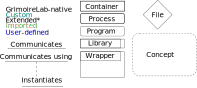
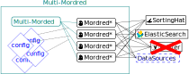
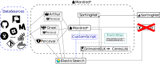

Multi-Mordred
While multi-Mordred does not cover the PAW as a whole, it does represent the core processing entity handling nearly all the other components.
What is a multi-mordred?
Multi-Mordred’s container represents a modified version of the Grimoirelab container featuring multi-morderd itself. A tool for starting and managing multiple parrallel instances of Morded, the Grimoirelab orchestrator, each with their own configuration, extended to support custom code as part of the process.
What is a Mordred?
Mordred is the Grimoirelab orchestrator. Internally it’s a scheduler, scheduling tasks associated with each of the phases, launching programs from the Grimoirelab ecosystem in accordance with these tasks. It chooses which of these programs to run based on a configuration file listing “backends” with optionally listed parameters or “studies”. These are internally associated with preset combinations of retrieval programs, and Cereslib/GrimoirelabELK-files to run.
Overview:
legend:
The Multi-Mordred container:
Mordred:
Custom Scripts
Since Mordred in it’s native form merely chooses which Programs in it’s container to run at what time with which arguments, it natively does not support making any custom code part of the process. To enable the introduction of custom enrichment methods without requiring the rebuilding of the container, the version of mordred used in multi-mordred is extended with a custom script step. To further increase the accessibility of experimentation within the PAW, ElasticWrap was created and comes pre-installed into the multi-mordred container, making it available to any custom scripts.
Why is a multi-mordred?
Taken as a whole, multimordred is intended to solve two related issues with grimoirelab in the context of the PAW, the first of which being scalability, as previously multiple unrelated analysis projects were required to either share a configuration file, requiring the container to be restarted (which is not a clean process process); multiple seperate containers, or a highly specialized environment to run grimoirelab on bare metal. Initially the only options for introducing custom enrichment into grimoireLab was either the aformentioned highly specialized bare-metal environment, or getting your custom code approved for merging into GrimoireLabELK, as GrimoireLab does not provide a method for building a docker image from local code. The custom script task is intended to make experimentation with the PAW accessible.